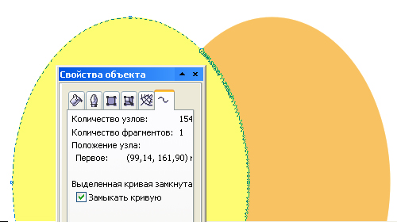

Создание контрольных точек на пересечениях контуров
SLx1 / 05.12.2010, 16:13/00:41
Форум:
Коллеги! Необходим следеющий макрос: имеем множество контурных объектов, выделяем пару -- в месте где линии контуров пересекаются на верхнем из выделенных добавляются Nodes (в соответствии с кривизной контура)
Может уже есть где готовое решени -- ткните носом :))
Или что будет стоить такое написать?
Заранее спасибо!
такое можно сделать и без макроса за три клика мышкой
сказав А говори Б
раскажите уж тогда что за клики
Помогли с решением:
http://forum.rudtp.ru/showthread.php?t=45958&p=524771#post524771
но про "три клика мышкой" с удовольствием бы послушал... :)
да запросто. Выделяем два объекта А и В, выполняем операцию пересечения (intersect). Получаем объект С. Далее снова выделяем А и В и выбираем операцию Back Minus Front (или Front Minus Back, смотря какой объект хотите оставить). Получаете отрезанную часть объекта А или В. Далее через шифт выделяем полученный от пересечения объект С и "свариваем" Weld'ом. Получается исходный объект А или В с узлами в месте точек пересечния.
:D :D :D :D :D
Уважаемая акула! Как говорят американцы Вы "сделали мне день"!
Про "три клика" зачет!!! :))
Спасибо! Но я выбираю макрос... мышка у меня не казенная! ;)))
Добавлено (14.12.2010, 23:26)
---------------------------------------------
:D :D :D :D :D
Уважаемая акула! Как говорят американцы Вы "сделали мне день"!
Про "три клика" зачет!!! :))
Спасибо! Но я выбираю макрос... мышка у меня не казенная! ;)))
Я бы не поставил, ибо это работает если пересекающиеся фигуры состоят из ломаных линий. Если же из кривых, то в довесок к требуемой точке в месте пересечения добавляется ещё целая вереница точек на кривой.
мне вполне хватит уже поставленного зачета :)
вполне возможно, что при каких-то ситуациях именно так и происходит. Может картинку прицепите, чтоб знать в каких.
Ну неужели самим долго взять два пересекающихся прямоугольника и
сделать "три клика", затем взять два хотя бы эллипса и тоже сделать "три клика"

Solowejka, мне так и не удалось повторить ваш фокус с вереницей точек. Я брал эллипсы, окружности, произвольные замкнутые кривые, но Корел упорно создавал объект с минимальным количеством точек.
...подтверждаю!
Страницы